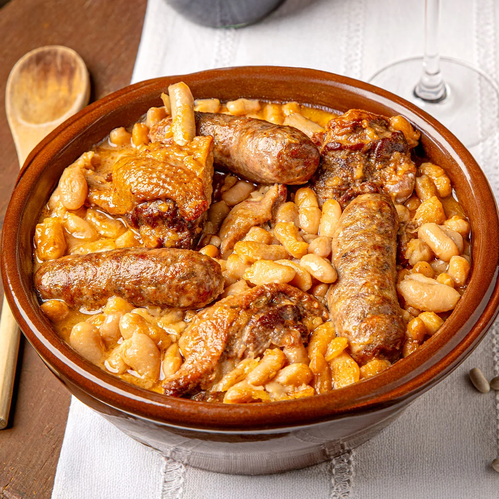
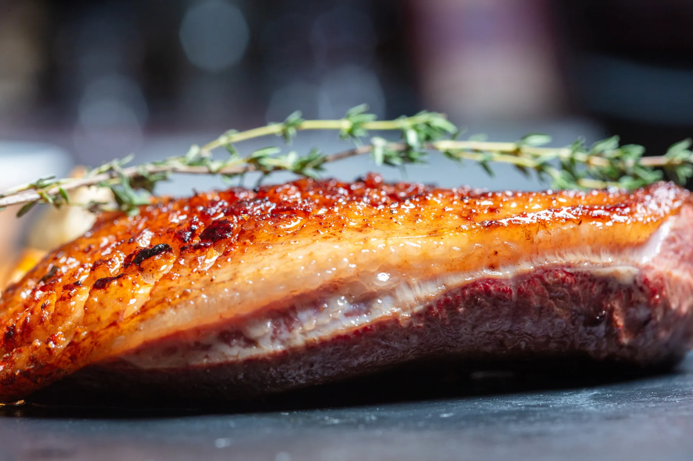
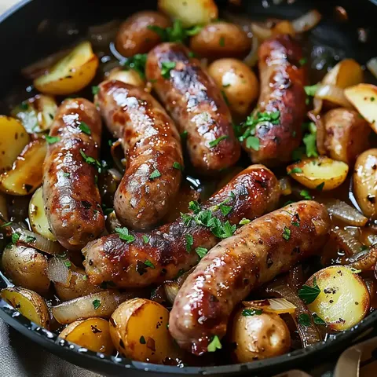
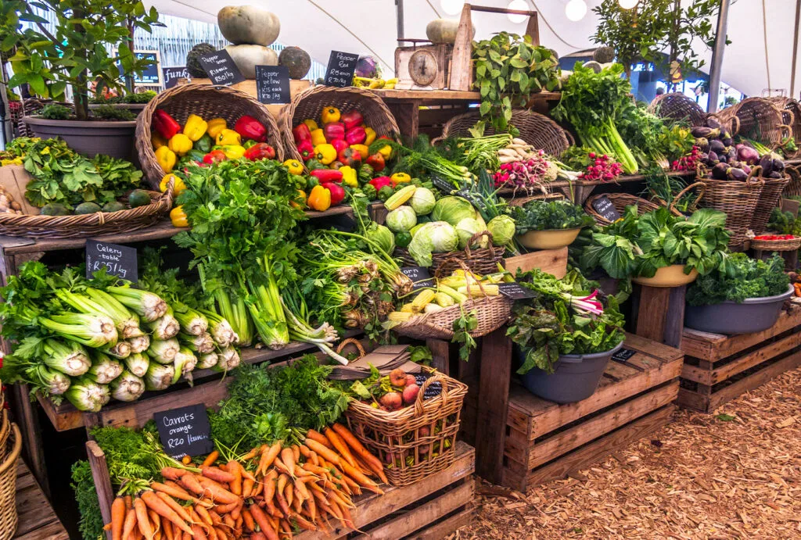
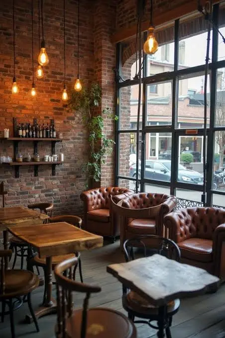

01 / LE GRAND CLASSIQUE
Cassoulet au confit de canard
Mijoté longuement, généreux et réconfortant, dans l’esprit des grandes tablées du Sud-Ouest.

TOULOUSE · À 50 M DE LA PLACE DU CAPITOLE
Une cuisine occitane généreuse, revisitée avec finesse et cuisinée au rythme des saisons.
BIENVENUE CHEZ Ô CAPITOLE
Au cœur de Toulouse, Ô Capitole célèbre les saveurs de la Haute-Garonne et du Sud-Ouest. Des recettes emblématiques, des produits frais sélectionnés auprès de producteurs locaux et une ambiance conviviale, entre briques roses, bois massif et lumière douce.
LES INCONTOURNABLES

Mijoté longuement, généreux et réconfortant, dans l’esprit des grandes tablées du Sud-Ouest.

Saisie minute, accompagnée de garnitures de saison et de toute la simplicité du bon produit.
Une note fruitée et dorée pour terminer le repas sur une spécialité du Sud-Ouest.
Suggestions de présentation : la carte, les disponibilités et l’origine précise des produits sont à confirmer par l’établissement avant publication.

DU PRODUCTEUR À L’ASSIETTE
Nous privilégions les circuits courts et les produits frais de la région, avec une attention portée à la saisonnalité et au savoir-faire de nos producteurs.
Lire notre engagementL’ESPRIT DU LIEU
Briques roses apparentes, bois massif et lumière naturelle : un cadre chaleureux pour un déjeuner entre collègues, un dîner en amoureux ou une découverte gourmande de Toulouse.

LE CARNET GOURMAND
VOTRE PROCHAINE ESCALE GOURMANDE
Pour un déjeuner toulousain ou un dîner aux saveurs du Sud-Ouest.
Demander une réservationAdresse e-mail de démonstration à remplacer avant mise en ligne.AU CŒUR DE TOULOUSE
12 rue du Taur
31000 Toulouse
À environ 50 mètres de la place du Capitole.
Itinéraire sur Google Maps ↗